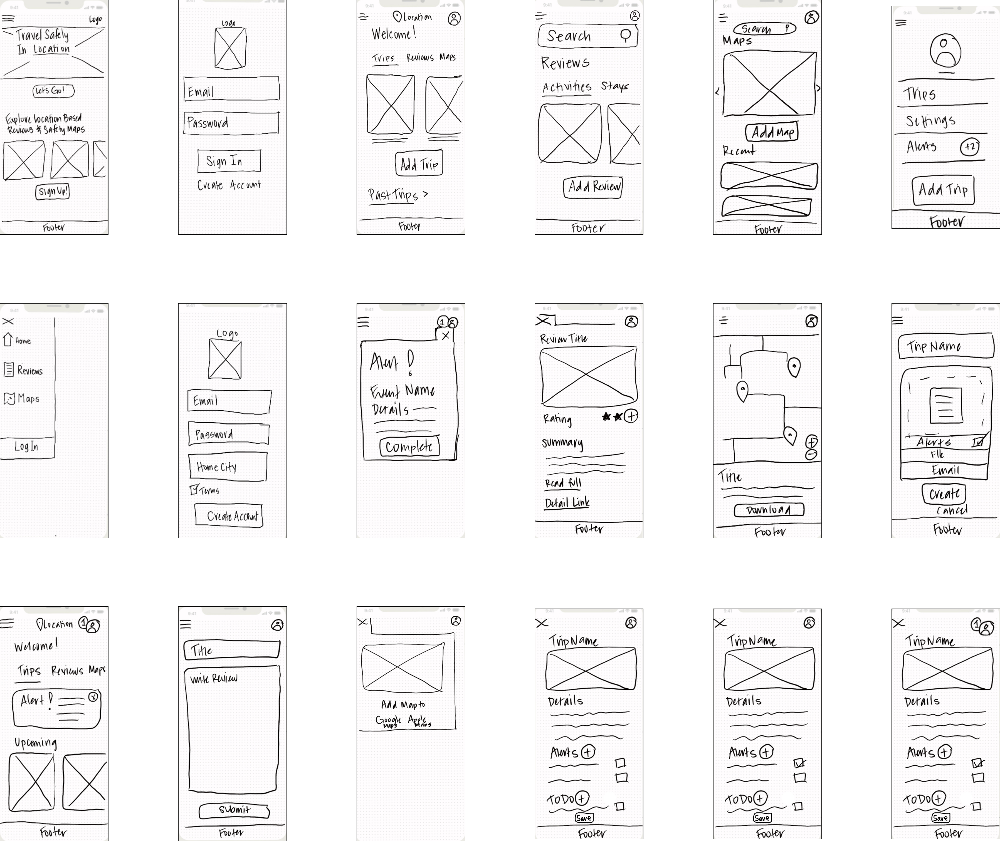

UX/UI Design — Case Study 04
SoloDareity
A responsive travel web-app designed to help solo female travelers feel safe, confident, and supported while exploring destinations abroad.
An opportunity to design a responsive travel web-app for a specific user population in need of support led to this project. Primary and secondary research focused on addressing safety concerns and providing a sense of security for solo female travelers while exploring new destinations abroad.
Solo female travelers struggle to travel and feel safe using existing apps across a variety of devices.
How might we help solo female travelers feel more secure and confident while traveling abroad using multiple devices?
The initial phase focused on understanding solo female traveler pain points related to safety and existing applications. User interviews, competitive analysis, and primary and secondary product research shaped the direction.
Primary and secondary research confirmed that solo female travelers are a market with significant unmet needs in terms of safety and support — and that no competitor adequately addresses them.

Based on research findings, I developed three primary user personas representing key audience segments. Special care was taken to make each persona inclusive and representative of the diversity within the solo female traveler demographic.
Road Trip Ray

Digital Nomad Nat

Introverted Explorer Emory

Research revealed that solo female travelers often feel unsafe in unfamiliar environments and struggle to find reliable support resources. They expressed a need for apps that are intuitive, secure, and provide real-time safety features.
Working with the Jobs to Be Done framework, I mapped three key user flows to guide the information architecture — focused on finding safe accommodations, accessing offline maps, and connecting with local communities for support.
- When I travel I want to write safety reviews so I can help others find locations that are safe.
- When I travel I want to read safety reviews so I can feel safer as a solo female traveler.
- When I travel I want to access reliable, downloadable safety maps so I can navigate safely in low-wifi zones.
- When I travel I want to get travel alerts about trip events so I do not miss them and end up in an unsafe situation.


A low-fidelity prototype based on sketched screens allowed rapid testing of different interface concepts and interaction patterns before committing to digital screens.

The visual design phase focused on creating an accessible, intuitive interface that supports the emotional needs of the solo female traveler. Two moodboards were created and shared with solo female travelers for asynchronous A/B testing via Lyssna — then with color, imagery, and type confirmed, UI components and responsive breakpoints were built to support mobile, tablet, and desktop screens.
Style Guide

Feedback & Iterations

Responsive Screens

After prototyping and testing with real users, final visuals were created to convey the completed product features. Testing participants reported feeling more confident and secure with the features, layout, and visuals of the final product — several asked when they would be able to use it for their next trip.


-
Safety First
Users reported feeling more confident and secure — several asked when they could use it for their next trip.
-
Community-Led
Peer safety reviews and community connections address the gap no existing competitor fills.
-
Truly Responsive
Designed mobile-first and tested across all breakpoints — seamless from phone to desktop.
-
Data-Driven
Asynchronous A/B testing with Lyssna ensured visual decisions were grounded in real user preference.